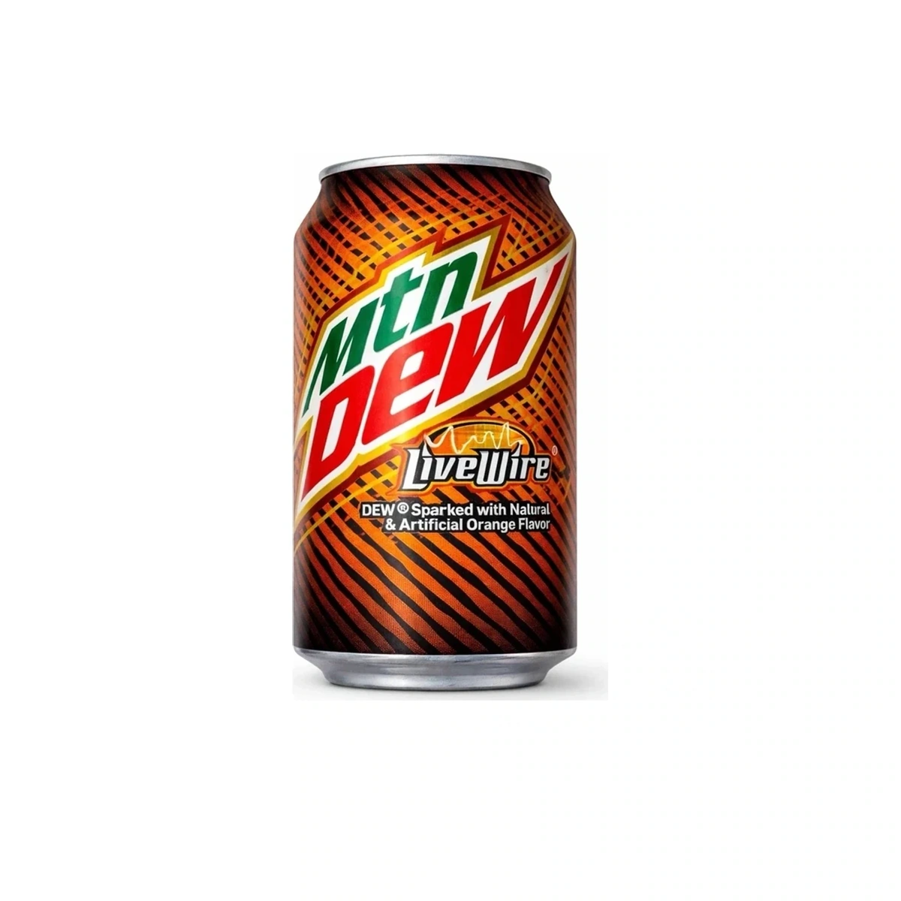

Status report
Status reportIs Red Bull Blue Edition Blueberry discontinued?
Yes. The original blueberry edition left Red Bull’s U.S. lineup in 2026, although foreign-market cans can still appear online.
Read the 9-minute report →Direct answers for discontinued flavors, package changes, and credible rumors. Every report is dated, sourced, and written for the United States first.
Status reportYes. The original blueberry edition left Red Bull’s U.S. lineup in 2026, although foreign-market cans can still appear online.
Read the 9-minute report → Status report
Status reportA major U.S. retailer reset placed Ultra Watermelon among Monster’s 2026 cuts, even while old catalog pages remain online.
Read the 9-minute report → Status report
Status reportThe creamy, full-sugar peach Reserve flavor was removed in the 2026 reset and has no direct replacement.
Read the 9-minute report → Status report
Status reportUltra Red is discontinued in normal U.S. distribution, but stale brand pages, isolated restocks, and imports keep the question confusing.
Read the 10-minute report → Status report
Status reportThe green curuba-and-elderflower Edition was removed from normal U.S. distribution in the 2026 range reset.
Read the 8-minute report → Status report
Status reportThe sugarfree watermelon variant ended in the U.S.; the regular Red Edition is a separate current drink.
Read the 8-minute report → Status report
Status reportThe sugarfree Amber Edition was cut in 2026 even though regular Strawberry Apricot remains in Red Bull’s U.S. range.
Read the 8-minute report → Status report
Status reportThe bright green limited release ended after its 2026 U.S. run; remaining packs are sell-through inventory.
Read the 8-minute report → Status report
Status reportThe 2026 Fizz-Free refresh kept Peach Mango but left Raspberry Acai Green Tea out of the current U.S. lineup.
Read the 9-minute report → Status report
Status reportA reported corporate email names October 1, but Monster still lists Ruby Red. The rumor is credible enough to watch, not confirm.
Read the 9-minute report → Status report
Status reportA specific report names Rehab Green Tea for October 1, while Monster’s official page still treats it as current.
Read the 9-minute report → Status report
Status reportRio Punch appears in the same October rumor as Ruby Red and Green Tea, but public Monster sources still list it.
Read the 9-minute report → Status report
Status reportThe black Reserve can and its formula ended, but Monster relaunched Orange Dreamsicle outside the Reserve line.
Read the 9-minute report →
Status reportThe orange soda is still current but regional. The older package design shown here is the discontinued part.
Read the 9-minute report →Brand announcements and current U.S. catalogs come first. Distributor notices and broad retail resets can establish real-world discontinuation when a brand leaves an old page online. Community reports start investigations but remain labeled as rumors until stronger evidence arrives.
There is no authoritative all-brand registry of discontinued flavors. The index expands in researched batches so it can become comprehensive without publishing guesses as facts.
Distributor emails, retailer reset sheets, date-coded cans, package changes, and repeated regional sightings can move a report from rumor to confirmed.